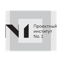

Андрей Щеглов
О себе
Я — DevOps/MLOps-инженер с более чем 15-летним опытом в ИТ. Проектирую отказоустойчивую инфраструктуру и автоматизирую процессы, которые помогают бизнесу быстрее доставлять ценность. Последние четыре года специализируюсь на MLOps: оптимизирую ML/DL-нагрузки, настраиваю GPU-кластеры Kubernetes и внедряю AI-решения — от LLM и эмбеддингов до ASR.
Следую подходу Infrastructure as Code (IaC), практикам DevSecOps и принципам Zero Trust. Для меня CI/CD-пайплайн или кластер должны быть не только запущены, но и безопасны, наблюдаемы и масштабируемы. Работаю с bare-metal-инфраструктурой и облаками AWS, Azure и GCP.
Беру end-to-end ответственность за эксплуатационную готовность сервисов: delivery, capacity planning, observability, runbooks и Postmortem.
Опыт работы
Ведущий DevOps-инженер
БИАТЕХ- Обеспечивал полный цикл эксплуатационной готовности AI-сервисов: архитектура размещения, delivery, масштабирование, интеграции, observability и Postmortem.
- Вывел AI Hub в PROD на Open WebUI + LiteLLM; масштабировал LiteLLM до 3 реплик с Redis и настроил Keycloak/OAuth.
- Стандартизировал delivery через GitLab CI, Argo CD, Helm и общие репозитории delivery, provisioning и balancer.
- Настроил capacity planning по метрикам, тайм-ауты для длительных потоковых ответов и нормализацию LLM-логов в ELK.
- Развернул MCP-интеграции Jira/TWiKi и сервер инструментов Excel с OAuth через Keycloak.
- Построил Datalab на PostgreSQL, Trino и Iceberg с интеграцией OPA и LDAP/Keycloak.
- Настроил GPU-сервисы в Kubernetes: MIG, разделение VRAM и запуск LLM/ASR/embedding-моделей.
Старший DevOps-инженер
Imhio- Поддерживал инфраструктуру на bare metal, AWS и Azure; настраивал CI/CD в GitLab, GoCD, Argo CD и GitHub Actions.
- Описывал инфраструктуру как код (IaC) с помощью Ansible, Terraform и Terragrunt.
- Администрировал Docker и Kubernetes; настраивал HA-решения (Nginx, Traefik, HAProxy, Keepalived, Pacemaker).
- Развивал системы мониторинга и логирования: Prometheus, Grafana, Loki, VictoriaMetrics.
- Обслуживал системы видеообработки, хранения и трансляции для геораспределённых сервисов.
- Поддерживал системы анализа изображений с использованием компьютерного зрения и нейросетей.
Старший MLOps-инженер
BSS- Разрабатывал и внедрял речевых ботов с использованием NER, ASR и TTS.
- Администрировал HA-кластеры: Nginx, Elasticsearch, MongoDB, Redis.
- Осуществил миграцию сервисов из Docker Compose в Kubernetes, написал Helm-чарты.
- Создавал Python-интеграции (REST/SOAP) и веб-приложения на Flask и Sanic.
- Настраивал телефонию (FreeSWITCH, Asterisk) и разрабатывал Telegram-ботов.
- Участвовал в проектах по созданию речевых ботов для МФЦ Москвы, Санкт-Петербурга, Тулы, Ставрополя и других регионов.

Cloud & DevOps Engineer Internship
EPAM- Изучал и применял CI/CD-инструменты: GitHub Actions, Jenkins и GitLab CI.
- Работал с Kubernetes, Ansible, Docker, Terraform и сервисами AWS (IAM, VPC, ALB, RDS, EFS, S3, EC2).
- Применял методологии Agile/Kanban и Scrum.

Старший системный администратор
АО «Проектный Институт №1»- Администрировал VMware vSphere, vCenter, Horizon; обеспечивал виртуализацию предприятия.
- Поддерживал облачный файловый сервер (Samba, Nextcloud, strongSwan), IKEv2 VPN, Zabbix и Postfix.
Старший системный администратор
Сеть магазинов «Суши ШОП»- Управлял ИТ-инфраструктурой на базе VPN L2/L3 (Cisco, HP).
- Администрировал колл-центр на Asterisk, мониторинг Zabbix, VMware ESXi и 1С.
Руководитель ИТ-отдела
ООО «ЕСТП-СРО»Системный администратор
НИЦ СПб ЭТУОбразование
Информационные системы и технологии
СПбГМТУ (Санкт-Петербургский государственный морской технический университет)Cloud & DevOps Internship
EPAM University Program- Kubernetes, AWS, Docker, Terraform, Ansible, GitLab, Prometheus, Grafana, Amazon EKS